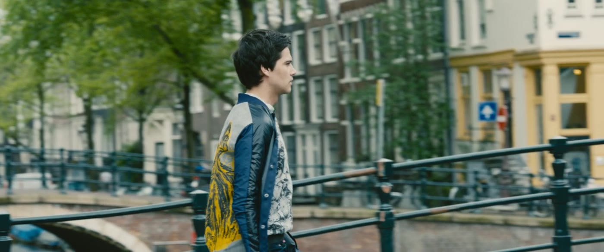
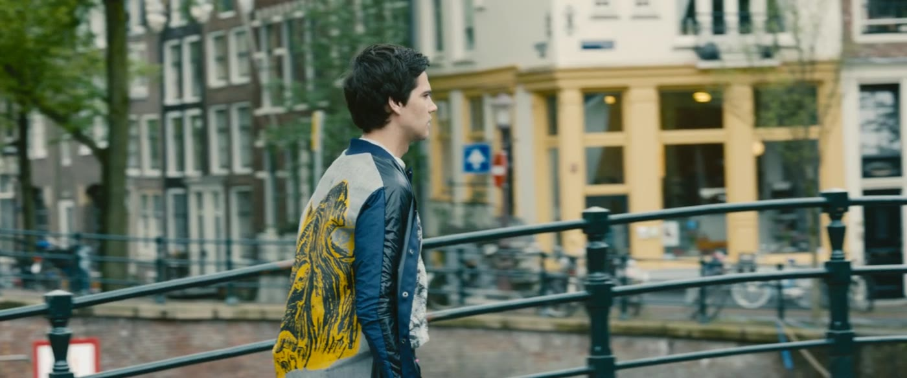
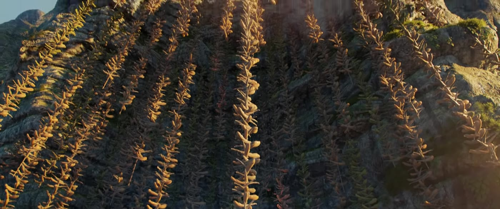
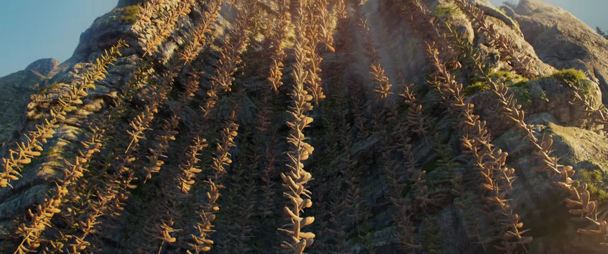

运镜
运镜 = 摄影机怎么动。动得好，观众跟着情绪走；为动而动，只会晃得人烦。
是什么
- 摇（Pan / Tilt）：机位不动，镜头左右摇或上下摇，像人转头看。
- 推 / 拉（Dolly in / out）：摄影机靠近或远离。推=聚焦、加压；拉=揭示环境、疏离。
- 移 / 跟（Tracking / Follow）：跟着人物平行移动或尾随。
- 升降（Crane / Jib）：上升或下降，开场结尾常有「宏大感」。
- 手持（Handheld）：晃、真、紧，纪实与动作戏常见。
- 稳定器 / 斯坦尼康：流畅穿过空间跟随人物。
- 变焦（Zoom）：机位不动只改焦距，感觉比「推」更人工。
- 希区柯克变焦（Dolly Zoom）：推拉与变焦反向，制造眩晕——世界塌了的感觉。




影像例子
推荐拉片镜头
- 《1917》（2019）：整部片做成一次走完的错觉，切点藏在全黑和挡镜里。
- 《熊家餐馆》第一季第 7 集「Review」：一条在后厨里走完的长镜头。
- 《继承之战》：对话里常用突然的变焦扎进人脸。
只写片名和场面。分钟数随修复版和网络拷贝变化，没有对某一份文件逐帧核对，所以不标时间点。
为什么重要
静止镜头让人「看清楚」；运动镜头让人「被带着体验」。运镜是叙事节奏和沉浸感的油门。《1917》（2019）把整部片做成一次走完前线的错觉，切点藏在全黑和挡镜里——运动的理由是「你跟着他」。《继承之战》则常用突然的变焦扎进人脸，那是窥视，不是把英雄推近。
怎么用
原则：运镜必须有动机——跟随人物、揭示信息、或表达情绪。写分镜或 AI 提示词时，先问自己：这个运动在帮观众得到什么？
对比
弱
镜头随便推近，因为「看起来更电影」。
强
她读完恐吓短信后镜头缓慢推近——观众被迫盯住她的恐惧。
练一练
同一段走路：固定、跟拍、手持各拍一次，剪在一起对比「客观 / 跟随 / 紧张」三种感觉。
一句话记住：运镜必须有动机——跟随、揭示、或表达情绪，不要为动而动。